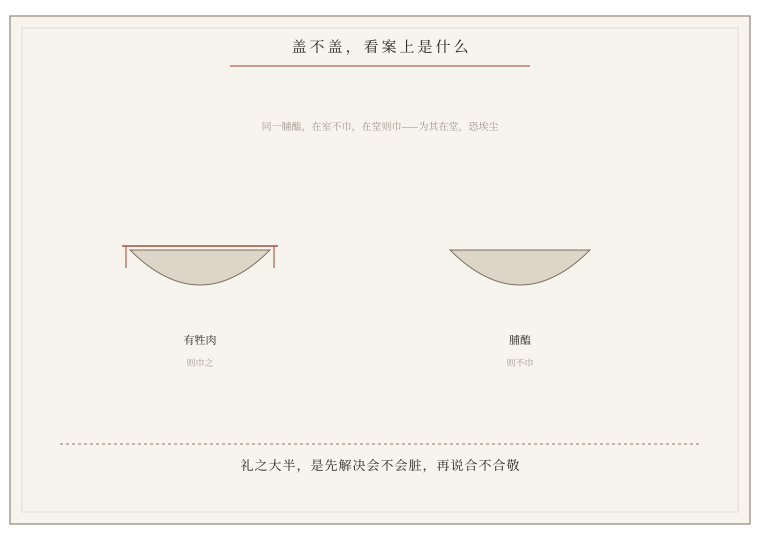

檀弓上 · 三·一百零六 · 第 309 课
丧不剥奠也与？祭肉也与？
说什么事：丧事的奠，为什么不盖巾、任其裸露？——因为有祭肉吧？
落在哪一层：巾与不巾。论「礼之繁简由物之性定」。
为何编在此位：上二课论复于六处、论赴告，皆是动作；此课转入案上之物——一只盖巾的有无。
【经】喪不剝奠也與？祭肉也與？
【注】剝猶倮也。有牲肉則巾之，為其久設，塵埃加也。脯、醢之奠不巾。
【疏】此一节论祭肉不可露见之事。剥犹倮露也，言丧奠脯醢不复设巾，可得倮露。「与」是语辞，谓丧不倮露奠者，为有祭肉也；无祭肉，即得倮露。注「有牲」至「不巾」：案《士丧礼》小敛，陈一鼎，既敛奠于尸东，祝受巾巾之，是「有牲肉则巾之」也。《士丧礼》又云，始死，脯、醢、醴、酒，奠于尸东，无巾；又殡后朝夕乃奠，醴、酒、脯、醢，如初设，不巾，是脯、醢、醴、酒不巾也。案《既夕礼》柩朝庙，重先，奠从，奠设如初，巾之——此亦脯、醢之奠，巾之者，为其在堂，恐埃尘，故虽脯、醢亦巾之。此文「脯醢之奠不巾」者，据室内也。
剥 注「犹倮也」。倮，裸露，不覆盖。
奠 丧中设于死者之前的饮食。
与 句末语辞，表疑问或推测。疏「『与』是语辞」。
祭肉 牲肉。有牲则鼎，有鼎则肉。
巾 覆盖之布。祝受巾巾之，前一「巾」为名词，后一「巾」为动词。
倮 同裸。
久设 设之时间较久。注谓有牲肉则巾，为其久设而尘埃加之。
丧事的奠，不盖巾、任其裸露吗？——是因为有祭肉吧？
此节是一句自问自答的揣测，注把它还原成一条规则。
问题：丧奠为什么不盖？ 答：因为有祭肉。
这话说得像猜，其实是断。疏把这个断讲成了对照： - 小敛，陈一鼎，奠于尸东，祝受巾巾之——有牲肉则巾； - 始死，脯、醢、醴、酒奠于尸东，无巾——无牲肉则不巾； - 殡后朝夕奠，醴、酒、脯、醢如初设，不巾——仍无牲肉； - 柩朝庙，奠设如初，巾之——同样是脯醢，此时却盖了。
最后一条最见分寸：同样的脯醢，在室内不盖，在堂上要盖。理由极朴素——「为其在堂，恐埃尘」。堂上风大尘多，室内没有。
所以「丧不剥奠」不是一个通则，是一条有条件的话：在室内、无牲肉，可以不盖。条件一变，话就变。
第一层 盖不盖，看物 礼的繁简，此处不由爵等定，不由哀戚定，而由案上是什么定。有肉则巾，无肉则不巾；在堂则巾，在室则不巾。这是一套极务实的判断：巾的功能是防尘，不是示敬。物不需要防尘，就不必盖。
礼家常被后人读成「处处有深意」。此节的注疏却把深意全部落回物理：肉久设则尘加，故巾之；脯醢不久，故不巾；堂有风尘，故巾之；室无风尘，故不巾。读至此，可知礼之大半，是先解决「会不会脏」，再说「合不合敬」。
第二层 「与」字的分寸 经文用「也与」，是测度之辞，不是判定之辞。注疏都说「与是语辞」。为什么要用测度？因为这是一个读者自己也会问的问题：为什么不盖？经不直说「有祭肉故巾」，而作一问，是把这个判断留给读者去完成。
古书的这种写法，是一份信任：它相信读者能从「有肉无肉」自己推出「盖与不盖」。
第三层 同一物、两种待遇 脯醢在室内裸露，在堂上遮盖。这不是礼的自相矛盾，是礼知道场合会改变物的处境。礼的具体性就在这里：它不说「脯醢当如何」，只说「脯醢在此处当如何」。
此节与 304「各视生时」、308「他日所尝有事」是同一种方法：礼不下抽象的令，只作具体的判。
与今日何干 今人办事，喜欢定通则：「丧事一律从简」「接待一律从丰」。此节的办法是先问：案上是什么？在什么地方？物与境一变，礼就变。通则最省事，也最容易失礼。
| 左 | 右 |
|---|---|
| 剥 | 倮露 |
| 奠 | 案上之设 |
| 有牲肉 | 则巾 |
| 无牲肉 | 则不巾 |
| 久设 | 尘埃加之 |
| 在堂 | 虽脯醢亦巾 |
| 在室 | 脯醢不巾 |
| 与 | 语辞·测度 |
画一处室内案上之陈设，视点略俯。画面并置两组：左侧一案，案上一只鼎（有盖、盖已合）、一只覆着布的陶豆；右侧一案，案上两只陶豆、一只酒壶，皆敞着口、无覆盖。两案之间置一只空鼎。案后地上有一道矮墙或门限（示意室内外之分）。不写文字、不画人面细节。赭色只用在左侧那只陶豆上覆布的一角，与右侧酒壶的壶口。
